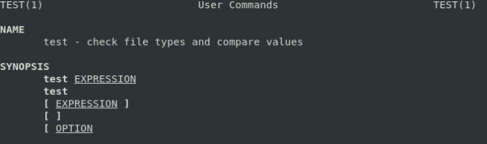

if
if-else:if [ condition ]; then
#code block
else
#code block
fi
if [ condition1 ]; then
#code block
elif [ condition2 ]; then
#code block
else
#code block
fi
Pay attention to spaces around the brackets. Otherwise, it won't work. This is because
[ itself is a command:
 From Bash 2.02 introduce the [[ ... ]] extended test command, which performs comparisons in a manner more familiar to programmers from other languages. Note that [[ is a
keyword, not a command